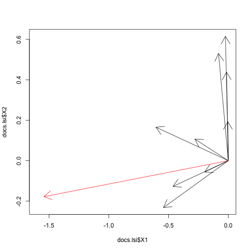

\[ A = U \Sigma V^{T} \]
\(A\) is m x n matrix
\(U\) is m x k orthonormal matrix
\(V\) is n x k orthonormal matrix
\(\Sigma\) is k x k - diagonal matrix
Mykola Pavlov
Biomech, Inc
\[ A = U \Sigma V^{T} \]
\(A\) is m x n matrix
\(U\) is m x k orthonormal matrix
\(V\) is n x k orthonormal matrix
\(\Sigma\) is k x k - diagonal matrix
Application of SVD to term-document matrices
## [1] "Human machine interface for Lab ABC computer applications"
## [2] "A survey of user opinion of computer system response time"
## [3] "The EPS user interface management system"
## [4] "System and human system engineering testing of EPS"
## [5] "Relation of user-perceived response time to error measurement"
## [6] "The generation of random, binary, unordered trees"
## [7] "The intersection graph of paths in trees"
## [8] "Graph minors IV: Widths of trees and well-quasi-ordering"
## [9] "Graph minors: A survey"
Documents (Deerwester et al. (1990), Table 2, Part 1)
df <- read.csv(file="matrix.csv")
print(df, row.names=F)
## Terms D1 D2 D3 D4 D5 D6 D7 D8 D9
## human 1 0 0 1 0 0 0 0 0
## interface 1 0 1 0 0 0 0 0 0
## computer 1 1 0 0 0 0 0 0 0
## user 0 1 1 0 1 0 0 0 0
## system 0 1 1 2 0 0 0 0 0
## response 0 1 0 0 1 0 0 0 0
## time 0 1 0 0 1 0 0 0 0
## EPS 0 0 1 1 0 0 0 0 0
## survey 0 1 0 0 0 0 0 0 1
## trees 0 0 0 0 0 1 1 1 0
## graph 0 0 0 0 0 0 1 1 1
## minors 0 0 0 0 0 0 0 1 1
df.svd <- svd(df[,-1])
scales <- df.svd$d[1:2]
scales
## [1] 3.3 2.5
termVectors <- df.svd$u[,1:2]
terms.lsi <- data.frame(termVectors, terms)
print(terms.lsi, row.names=F)
## X1 X2 terms
## -0.221 -0.113 human
## -0.198 -0.072 interface
## -0.240 0.043 computer
## -0.404 0.057 user
## -0.644 -0.167 system
## -0.265 0.107 response
## -0.265 0.107 time
## -0.301 -0.141 EPS
## -0.206 0.274 survey
## -0.013 0.490 trees
## -0.036 0.623 graph
## -0.032 0.451 minors
docVectors <- df.svd$v[,1:2]
docs.lsi <- data.frame(docVectors, Docs=strtrim(docs, 50))
print(docs.lsi, row.names=F, col.names=F)
## X1 X2 Docs
## -0.1974 -0.056 Human machine interface for Lab ABC computer appli
## -0.6060 0.166 A survey of user opinion of computer system respon
## -0.4629 -0.127 The EPS user interface management system
## -0.5421 -0.232 System and human system engineering testing of EPS
## -0.2795 0.107 Relation of user-perceived response time to error
## -0.0038 0.193 The generation of random, binary, unordered trees
## -0.0146 0.438 The intersection graph of paths in trees
## -0.0241 0.615 Graph minors IV: Widths of trees and well-quasi-or
## -0.0820 0.530 Graph minors: A survey
human <- as.numeric(terms.lsi[terms.lsi$terms == "human", 1:2])
computer <- as.numeric(terms.lsi[terms.lsi$terms == "computer", 1:2])
query <- human + computer
print(query)
## [1] -0.46 -0.07
\((0.22, -0.11) + (0.24, 0.04) = (0.46, -0.07)\)
Cosine distance: \(Cos\theta = \frac{a \cdot b}{||a|| ||b||}\)
y <- (scales * query)
scores <- apply(docs.lsi[,1:2], 1, function(x) x %*% y / sqrt(x%*%x * y%*%y))
print(data.frame(scores, docs), row.names=F)
## scores docs
## 0.99 Human machine interface for Lab ABC computer applications
## 0.93 A survey of user opinion of computer system response time
## 0.99 The EPS user interface management system
## 0.96 System and human system engineering testing of EPS
## 0.89 Relation of user-perceived response time to error measurement
## -0.09 The generation of random, binary, unordered trees
## -0.08 The intersection graph of paths in trees
## -0.08 Graph minors IV: Widths of trees and well-quasi-ordering
## 0.04 Graph minors: A survey
plot(docs.lsi$X1, docs.lsi$X2, type="n", xlim = c(-1.6, 0))
arrows(0,0, docs.lsi$X1, docs.lsi$X2)
arrows(0,0, scales[1]*query[1], scales[2]*query[2], col=2)

y <- (scales * query)
scores <- apply(terms.lsi[,1:2], 1, function(x) x %*% y / sqrt(x%*%x * y%*%y))
print(data.frame(scores, terms), row.names=F)
## scores terms
## 0.94 human
## 0.97 interface
## 0.96 computer
## 0.97 user
## 0.99 system
## 0.88 response
## 0.88 time
## 0.95 EPS
## 0.51 survey
## -0.09 trees
## -0.06 graph
## -0.04 minors
Row Space -> Column Space
\(AV = U \Sigma\)
## Terms D1 D2 D3 D4 D5 D6 D7 D8 D9
## human 1 0 0 1 0 0 0 0 0
## interface 1 0 1 0 0 0 0 0 0
## computer 1 1 0 0 0 0 0 0 0
## user 0 1 1 0 1 0 0 0 0
## system 0 1 1 2 0 0 0 0 0
## response 0 1 0 0 1 0 0 0 0
## time 0 1 0 0 1 0 0 0 0
## EPS 0 0 1 1 0 0 0 0 0
## survey 0 1 0 0 0 0 0 0 1
## trees 0 0 0 0 0 1 1 1 0
## graph 0 0 0 0 0 0 1 1 1
## minors 0 0 0 0 0 0 0 1 1
\(A = U \Sigma V^{-1} = U \Sigma V^{T}\)
\(A^{T} A = V \Sigma^{T} U^{T} U \Sigma V^{T} = V \Sigma^2 V^{T}\)
\(A A^{T} = U \Sigma V^{T} V \Sigma^{T} U^{T}= U \Sigma^2 U^{T}\)
But what is \(U\), \(\Sigma\), \(V\)?
There exists an orthonormal basis of Q consisting of eigenvectors of B. Each eigenvalue is real
\(B = Q \Lambda Q^{T}\)
And our \(AA^{T}\) is like B, squared, symmetric
But what is eigenvalues and eigenvectors?
\(Ax = \lambda x\)

\(Ax - \lambda x = 0\)
\((A - \lambda I) x = 0\)
\(A - \lambda I = 0\)
\(\lambda\) - eigenvalues
\(x\) - eigenvectors
Find eigenvectors \(U\) of \(A A^{T}\)
Find eigenvectors \(V\) of \(A^{T} A\)
The non-zero singular values of \(A\) found on the diagonal entries of \(\Sigma\) are the square roots of the non-zero eigenvalues of both \(A A^{T}\) and \(A^{T} A\).
That's it!

MIT Professor Gilbert Strang teaching 18.06: http://ocw.mit.edu/courses/mathematics/18-06-linear-algebra-spring-2010/video-lectures/
SVD Tutorial: http://alias-i.com/lingpipe/demos/tutorial/svd/read-me.html
Wiki: http://en.wikipedia.org/wiki/Singular_value_decomposition